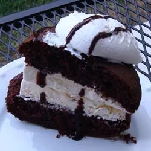

Home
Cookie Ice Cream Sandwiches

Description
A chocolate cookie ice cream sandwich makes for a sweet, delicious, and cool treat for kids and adults alike!
This recipe uses cake mix for soft and moist cookies; customize this recipe with your own candies, sprinkles, or whatever you like!
- Prep Time: 20 Mins
- Cook Time: 10 Mins
- Additional Time: 30 Mins
- Total Time: 1 Hr
- Servings: 12
- Yield: 12 Ice Cream Sandwiches
Ingredients
- 1 (15.25 ounce) package chocolate cake mix
- ½ cup butter, softened
- 2 eggs
- ½ cup semisweet chocolate chips
- ½ cup butterscotch chips
- 1 teaspoon vanilla extract
- ½ gallon vanilla ice cream, softened
Directions
- Preheat the oven to 350 degrees F (175 degrees C). Lightly grease baking sheets.
- Mix cake mix, butter, eggs, chocolate chips, butterscotch chips, and vanilla in a large bowl. Roll dough into 2-inch balls and place them 2 inches apart on the prepared baking sheets. Bake for 10 minutes in the preheated oven. Do not overbake; the cookies should be set, but still soft. Let cool on the baking sheet for a few minutes before removing to finish cooling on wire racks.
- Using an ice cream scoop, mold ice cream into a ball about the size of the cookies. Place scoop of ice cream between two cookies and gently press together. If you like a smooth edge, run the back of a spoon around the edge of the ice cream sandwich. Working quickly, fill all of the cookies, lay out on a baking sheet, and place in the freezer to harden. Serve when the ice cream has frozen solid. Sandwich cookies can be stored in a freezer bag for up to two weeks.